About
I'm Eden, a Tech Product Manager with a background in industrial design. I focus on UI/UX analysis, system planning, and workflow design, and contribute directly to front-end implementation.
My training in metalwork and industrial design informs how I approach structure, assembly sequences, and practical constraints. I translate fragmented requirements into information architecture and task flows, clarifying how features connect and what the team needs to build.
Requirements and information architecture
I clarify user contexts, business needs, and technical constraints before defining feature relationships and information architecture. I also account for maintenance and future changes, so new requirements can fit into the existing structure.

UI/UX and task flows
I evaluate interfaces in the context of complete tasks: the order in which information appears, the actions users take, and the transitions between screens and states. My experience in curation and exhibition planning informs how I think about movement, attention, and information hierarchy.

Cross-functional alignment
In curatorial work, I coordinated sponsors, artists, and venue technicians under resource constraints. I bring that experience to product discussions, making competing priorities and technical trade-offs explicit so teams can agree on a workable plan.

Design and implementation
I contribute directly to front-end implementation, translating product decisions into components, interface states, and constraints. I document the reasoning behind design and technical choices, giving the team a shared reference during review and handoff.
